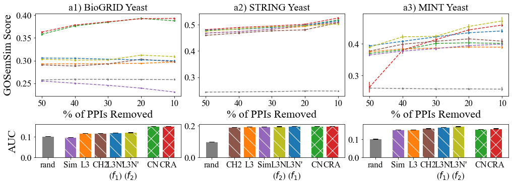
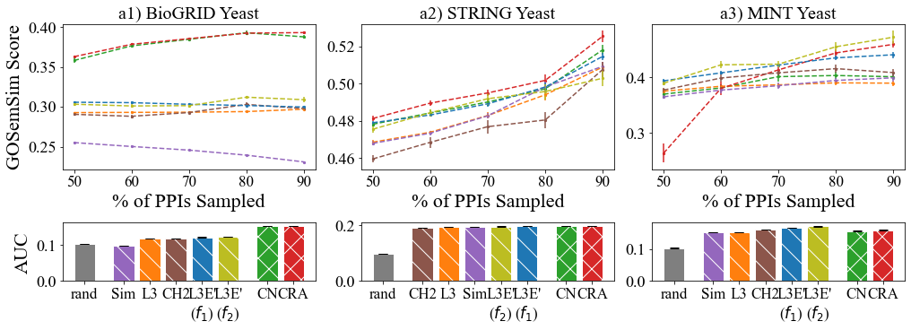

from collections import defaultdict
import json
import pandas as pd
import seaborn as sns
import numpy as np
from matplotlib import pyplot as plt
import scipy.stats
import os
from scipy import stats
from sklearn import metrics
import pickle
---------------------------------------------------------------------------
ModuleNotFoundError Traceback (most recent call last)
Cell In[1], line 4
2 import json
3 import pandas as pd
----> 4 import seaborn as sns
5 import numpy as np
6 from matplotlib import pyplot as plt
ModuleNotFoundError: No module named 'seaborn'
def mean_confidence_interval(data, confidence=0.99):
a = 1.0 * np.array(data)
n = len(a)
m, se = np.mean(a), scipy.stats.sem(a)
h = se * scipy.stats.t.ppf((1 + confidence) / 2., n-1)
#return m, m-h, m+h
return h
init metadata#
colors = {
"L3E1_f1": "tab:blue",
"L3E1_f2": "tab:olive",
"L3E_f1Alt": "navy",
"L3E_f2Alt": "gold",
"L3": "tab:orange",
"CN": "tab:green",
"CRA": "tab:red",
"CH2": "tab:brown",
"Sim": "tab:purple",
"rand": "tab:grey",
"countP4": "black"
}
methods = ["commonNeighbor", "L3Normalizing", "CRA", "Sim", "CH2_L3", "random", "countP4", "L3E1_f1", "L3E1_f2", "L3E_f1Alt", "L3E_f2Alt"]
methods_map = ["CN", "L3", "CRA", "Sim", "CH2", "rand", "countP4", "L3E1_f1", "L3E1_f2", "L3E_f1Alt", "L3E_f2Alt"]
abbrev_map = ["CN", "L3", "CRA", "Sim", "CH2", "rand", "no.\n of $P_{4}$", "L3N'\n($f_{1}$)", "L3N'\n($f_{2}$)", "L3N\n($f_{1}$)", "L3N\n($f_{2}$)"]
label_map = ["CN", "L3", "CRA", "Sim", "CH2", "rand", "no. of $P_{4}$", "L3N'($f_{1}$)", "L3N'($f_{2}$)", "L3N($f_{1}$)", "L3N($f_{2}$)"]
methods_names = dict(zip(methods, methods_map))
abbrevs = dict(zip(methods_map, abbrev_map))
labels = dict(zip(methods_map, label_map))
parse predicted PPIs & GOSemSim scores#
# parse ppi of different predictor & ds into one data structure
methods = ["commonNeighbor", "L3Normalizing", "CRA", "Sim", "CH2_L3", "L3E1_f1", "L3E1_f2", "random"]
ds_names = ['bioGRID', 'STRING', 'MINT']
topPPIs = {}
for randSz in range(50, 100, 10):
topPPIs[randSz] = defaultdict(dict)
for method in methods:
for ds in ds_names:
if randSz == 50:
filename = "./linkPred_out_reduced/{}_{}_topPPI.json".format(method, ds)
else:
filename = "./linkPred_out_reduced/{}_{}_randSz{}_topPPI.json".format(method, ds, randSz)
with open(filename, "r") as f:
tmpPPIs = json.loads(f.read())
topPPIs[randSz][method][ds] = []
for trial in range(len(tmpPPIs)):
topPPIs[randSz][method][ds].append(["\t".join(i) for i in tmpPPIs[trial]])
# structure: topPPIs = {'commonNeighbor': ['bioGRID': [[ppi1, ppi2], ...], ...], ...}
print(topPPIs[50]['commonNeighbor']['bioGRID'][0][0:10])
['DHH1\tCCR4', 'DHH1\tNAB2', 'DHH1\tMPT5', 'DHH1\tSSB2', 'DHH1\tPUF3', 'MPT5\tCCR4', 'PUF3\tCCR4', 'ISW1\tCCR4', 'DHH1\tISW1', 'SSB2\tNAB2']
GO_PPIMap, GO_scoreMap = [], []
fNames = set()
for file in os.listdir("./GOSemSim_out"): fNames.add(file.split(" _")[0])
for file in fNames:
if 'human' in file or 'HuRI' in file: continue
with open("./GOSemSim_out/{} _PPI.json".format(file), "r") as f:
readPPIs = json.loads(f.read())
GO_PPIMap += readPPIs
with open("./GOSemSim_out/{} _GOSemSim.json".format(file), "r") as f:
readScores = json.loads(f.read())
GO_scoreMap += readScores
GOSemSimMap = {}
for i in range(len(GO_PPIMap)): GOSemSimMap["\t".join(GO_PPIMap[i])] = GO_scoreMap[i]
print(list(GOSemSimMap.keys())[0:10])
print(list(GOSemSimMap.values())[0:10])
Get GOSemSim scores of PPIs into df#
# construct df for plotting
df_dict = defaultdict(list)
ds_names = ['bioGRID', 'STRING', 'MINT']
for randSz in range(50, 100, 10):
for method in methods:
for ds in ds_names:
for trial in range(len(topPPIs[randSz][method][ds])):
for i in range(len(topPPIs[randSz][method][ds][trial])):
df_dict['randSz'].append(randSz)
df_dict['ds'].append(ds)
df_dict['trial'].append(trial)
df_dict['rank'].append(i)
df_dict["score"].append(GOSemSimMap[topPPIs[randSz][method][ds][trial][i]])
df_dict["predictor"].append(methods_names[method])
df = pd.DataFrame(df_dict)
df
| randSz | ds | trial | rank | score | predictor | |
|---|---|---|---|---|---|---|
| 0 | 50 | bioGRID | 0 | 0 | 0.158 | CN |
| 1 | 50 | bioGRID | 0 | 1 | 0.644 | CN |
| 2 | 50 | bioGRID | 0 | 2 | 0.567 | CN |
| 3 | 50 | bioGRID | 0 | 3 | 0.429 | CN |
| 4 | 50 | bioGRID | 0 | 4 | 0.641 | CN |
| ... | ... | ... | ... | ... | ... | ... |
| 26947915 | 90 | MINT | 9 | 1687 | 0.252 | rand |
| 26947916 | 90 | MINT | 9 | 1688 | 0.100 | rand |
| 26947917 | 90 | MINT | 9 | 1689 | 0.203 | rand |
| 26947918 | 90 | MINT | 9 | 1690 | 0.060 | rand |
| 26947919 | 90 | MINT | 9 | 1691 | 0.273 | rand |
26947920 rows × 6 columns
Get data for plotting#
# get top 10% score group by method & ds, avg across trial, ignore NaN
#topTenPPIs = df[df['rank'] < int(np.max(df['rank'])*0.1)].copy()
topTenPPIs = df.copy()
topTenPPIs.drop(columns=['rank'], inplace=True)
topTenPPIs
| randSz | ds | trial | score | predictor | |
|---|---|---|---|---|---|
| 0 | 50 | bioGRID | 0 | 0.158 | CN |
| 1 | 50 | bioGRID | 0 | 0.644 | CN |
| 2 | 50 | bioGRID | 0 | 0.567 | CN |
| 3 | 50 | bioGRID | 0 | 0.429 | CN |
| 4 | 50 | bioGRID | 0 | 0.641 | CN |
| ... | ... | ... | ... | ... | ... |
| 26947915 | 90 | MINT | 9 | 0.252 | rand |
| 26947916 | 90 | MINT | 9 | 0.100 | rand |
| 26947917 | 90 | MINT | 9 | 0.203 | rand |
| 26947918 | 90 | MINT | 9 | 0.060 | rand |
| 26947919 | 90 | MINT | 9 | 0.273 | rand |
26947920 rows × 5 columns
# create dict of sorted mean GOSemSim scores & conf interval
meanScore_dict, std_dict, score_dict = {}, {}, {}
for randSz in range(50, 100, 10):
meanScore_dict[randSz], std_dict[randSz], score_dict[randSz] = defaultdict(dict), defaultdict(dict), defaultdict(dict)
for ds in set(topTenPPIs['ds']):
# get mean GOSemSim & conf Int for each predictor
for predictor in set(topTenPPIs[(topTenPPIs['ds'] == ds) & (topTenPPIs['randSz'] == randSz)]['predictor']):
tmpMean = []
for trial in range(10):
curScores = np.asarray(topTenPPIs[(topTenPPIs['randSz'] == randSz) & (topTenPPIs['ds'] == ds) & (topTenPPIs['predictor'] == predictor) & (topTenPPIs['trial'] == trial)]['score'])
curScores = curScores[~np.isnan(curScores)]
tmpMean.append(np.mean(curScores))
score_dict[randSz][ds][predictor] = tmpMean
meanScore_dict[randSz][ds][predictor] = np.mean(tmpMean)
std_dict[randSz][ds][predictor] = np.std(tmpMean)
meanScore_dict[randSz][ds] = dict(sorted(meanScore_dict[randSz][ds].items(), key=lambda item: item[1])[::-1])
tmp = {}
for predictor in meanScore_dict[randSz][ds]: tmp[predictor] = std_dict[randSz][ds][predictor]
std_dict[randSz][ds] = tmp
with open("./GOSemSim_out/score_dict.pkl", "wb") as f:
pickle.dump(score_dict, f, protocol=pickle.HIGHEST_PROTOCOL)
with open("./GOSemSim_out/meanScore_dict.pkl", "wb") as f:
pickle.dump(meanScore_dict, f, protocol=pickle.HIGHEST_PROTOCOL)
with open("./GOSemSim_out/std_dict.pkl", "wb") as f:
pickle.dump(std_dict, f, protocol=pickle.HIGHEST_PROTOCOL)
print(meanScore_dict)
print("")
print(std_dict)
{50: defaultdict(<class 'dict'>, {'MINT': {'L3E1_f1': 0.3940309211627616, 'L3E1_f2': 0.3896972158320652, 'CH2': 0.37732208278206325, 'L3': 0.37535242873070335, 'CN': 0.37011901640550526, 'Sim': 0.3652444996286086, 'CRA': 0.26331303482227886, 'rand': 0.2598856121022108}, 'bioGRID': {'CRA': 0.36283736808210737, 'CN': 0.3581096223672454, 'L3E1_f1': 0.30571319301253075, 'L3E1_f2': 0.30324070777222484, 'L3': 0.29270235915825354, 'CH2': 0.29056165881608675, 'rand': 0.2574337942999446, 'Sim': 0.25511304099205023}, 'STRING': {'CRA': 0.48121832684217003, 'L3E1_f1': 0.4789385192543336, 'CN': 0.4781333043543018, 'L3E1_f2': 0.47544982362243127, 'L3': 0.46847167978421433, 'Sim': 0.46785415085073867, 'CH2': 0.45947497391119124, 'rand': 0.24327012863040803}}), 60: defaultdict(<class 'dict'>, {'MINT': {'L3E1_f2': 0.4229714581350815, 'L3E1_f1': 0.4084875178357582, 'CH2': 0.39919089013283177, 'L3': 0.38427742755836247, 'CN': 0.3812822755380093, 'CRA': 0.3805571071550447, 'Sim': 0.37738046998101693, 'rand': 0.258792370765399}, 'bioGRID': {'CRA': 0.3783937218771038, 'CN': 0.37643715842211156, 'L3E1_f1': 0.3051868642532265, 'L3E1_f2': 0.3010596722441833, 'L3': 0.29299366715896025, 'CH2': 0.2881200389205497, 'rand': 0.2589608731680719, 'Sim': 0.25022203242606367}, 'STRING': {'CRA': 0.4894860608366008, 'L3E1_f2': 0.4843145616892245, 'CN': 0.4842003880465032, 'L3E1_f1': 0.4830948065464094, 'L3': 0.4738275790634162, 'Sim': 0.4733284916729385, 'CH2': 0.4684104645429314, 'rand': 0.24435628601634676}}), 70: defaultdict(<class 'dict'>, {'MINT': {'L3E1_f2': 0.42419611077496605, 'L3E1_f1': 0.4225509021565908, 'CRA': 0.41387041087190213, 'CH2': 0.40853527966969577, 'CN': 0.40164497421932166, 'L3': 0.38685085973152733, 'Sim': 0.38532598856434236, 'rand': 0.2576967240933881}, 'bioGRID': {'CRA': 0.38547928350149013, 'CN': 0.384691258490656, 'L3E1_f1': 0.3031336058237022, 'L3E1_f2': 0.30145148639801994, 'L3': 0.29320634546646607, 'CH2': 0.29278025232135585, 'rand': 0.2587596242661324, 'Sim': 0.2456675898109247}, 'STRING': {'CRA': 0.49495037877567816, 'L3E1_f2': 0.4918482324283319, 'CN': 0.49006440790166844, 'L3E1_f1': 0.4891084143102245, 'L3': 0.4828185825685476, 'Sim': 0.4826560702076799, 'CH2': 0.4768217487201823, 'rand': 0.2452710955069855}}), 80: defaultdict(<class 'dict'>, {'MINT': {'L3E1_f2': 0.45561135173483425, 'CRA': 0.4445525014537906, 'L3E1_f1': 0.4356182812448268, 'CH2': 0.4161088771276016, 'CN': 0.4037183072674565, 'Sim': 0.39484172735670786, 'L3': 0.3904694941999182, 'rand': 0.25764698691952514}, 'bioGRID': {'CN': 0.3929137645916004, 'CRA': 0.3924015857416394, 'L3E1_f2': 0.31204662990018406, 'CH2': 0.30297224917642185, 'L3E1_f1': 0.3015986001727697, 'L3': 0.2940186900421759, 'rand': 0.2585154581023477, 'Sim': 0.23932738158057654}, 'STRING': {'CRA': 0.5016962075436336, 'Sim': 0.4981842113943202, 'L3E1_f1': 0.4981180602624127, 'CN': 0.49714723317043985, 'L3E1_f2': 0.49572057103116157, 'L3': 0.4939467364721947, 'CH2': 0.48041707113376564, 'rand': 0.24775369418524748}}), 90: defaultdict(<class 'dict'>, {'MINT': {'L3E1_f2': 0.47295095228780754, 'CRA': 0.46001084980243423, 'L3E1_f1': 0.4411780073479, 'CH2': 0.4089954962198723, 'CN': 0.4015191859553197, 'Sim': 0.3995736759722456, 'L3': 0.38987467343110477, 'rand': 0.25675567165796487}, 'bioGRID': {'CRA': 0.39308336166259633, 'CN': 0.3877545270004299, 'L3E1_f2': 0.30891576890151595, 'L3E1_f1': 0.29972886191643777, 'CH2': 0.29778291158068904, 'L3': 0.2969772911129455, 'rand': 0.2580996074369128, 'Sim': 0.23087450469875104}, 'STRING': {'CRA': 0.5254214291122457, 'CN': 0.5181179889727497, 'L3E1_f1': 0.5145850184006691, 'Sim': 0.509250049601773, 'L3': 0.5088759384242152, 'CH2': 0.5075417377643886, 'L3E1_f2': 0.5028461366224453, 'rand': 0.24747711933791178}})}
{50: defaultdict(<class 'dict'>, {'MINT': {'L3E1_f1': 0.003940856658510213, 'L3E1_f2': 0.003796025091765462, 'CH2': 0.003921172118459572, 'L3': 0.004282071880646153, 'CN': 0.0066677082776810965, 'Sim': 0.0036714803063968935, 'CRA': 0.01697367243640567, 'rand': 0.002594747184553087}, 'bioGRID': {'CRA': 0.001889879071621039, 'CN': 0.0033422766661264994, 'L3E1_f1': 0.0011389021990217691, 'L3E1_f2': 0.0017987963032854814, 'L3': 0.0009689474487067645, 'CH2': 0.0013732601690717601, 'rand': 0.0012342901957510077, 'Sim': 0.0015404528650093995}, 'STRING': {'CRA': 0.0015691602807271423, 'L3E1_f1': 0.0010682041080045486, 'CN': 0.0010695354745761715, 'L3E1_f2': 0.0016784804116254561, 'L3': 0.0010093711368909257, 'Sim': 0.0011509938653165841, 'CH2': 0.001988583971956256, 'rand': 0.0010995367231802957}}), 60: defaultdict(<class 'dict'>, {'MINT': {'L3E1_f2': 0.0063184984769433785, 'L3E1_f1': 0.0034386554695344167, 'CH2': 0.005982830001769873, 'L3': 0.0026248605955047745, 'CN': 0.005851747370502768, 'CRA': 0.011797612769087312, 'Sim': 0.005422506855890266, 'rand': 0.0036979353144743743}, 'bioGRID': {'CRA': 0.0016917605238631732, 'CN': 0.001661661272653697, 'L3E1_f1': 0.001577470670841851, 'L3E1_f2': 0.002414962158522957, 'L3': 0.0009340439155340472, 'CH2': 0.0021656515898661223, 'rand': 0.0014506688616417308, 'Sim': 0.0011994241003579062}, 'STRING': {'CRA': 0.0015553969102867606, 'L3E1_f2': 0.0018551770796992753, 'CN': 0.0017668309558745055, 'L3E1_f1': 0.0007116094392058123, 'L3': 0.0008842971129044969, 'Sim': 0.0009831053450782051, 'CH2': 0.0029052242481090664, 'rand': 0.0017145479790946652}}), 70: defaultdict(<class 'dict'>, {'MINT': {'L3E1_f2': 0.005247050470047812, 'L3E1_f1': 0.0023321929840587337, 'CRA': 0.0041869120956950145, 'CH2': 0.005128209614214021, 'CN': 0.008582939885935923, 'L3': 0.0032709531266335106, 'Sim': 0.005204928512981806, 'rand': 0.0031150518369491742}, 'bioGRID': {'CRA': 0.001627565435547385, 'CN': 0.0022377910361634995, 'L3E1_f1': 0.0009888283134681325, 'L3E1_f2': 0.0021689958260054853, 'L3': 0.000878296679813956, 'CH2': 0.0012489850990549836, 'rand': 0.0023300306493426147, 'Sim': 0.000948142690897639}, 'STRING': {'CRA': 0.001845872750128658, 'L3E1_f2': 0.0031268470038697993, 'CN': 0.0019452356638117927, 'L3E1_f1': 0.0013774293642766818, 'L3': 0.0017444969656210995, 'Sim': 0.0015385306071209958, 'CH2': 0.003555064262216573, 'rand': 0.0010483024481636595}}), 80: defaultdict(<class 'dict'>, {'MINT': {'L3E1_f2': 0.00791755004456879, 'CRA': 0.00607552134642875, 'L3E1_f1': 0.004395592768481324, 'CH2': 0.0071197378848594, 'CN': 0.006888967384955628, 'Sim': 0.003984158454883021, 'L3': 0.0038063731856676623, 'rand': 0.003160333030252797}, 'bioGRID': {'CN': 0.0026319563069979288, 'CRA': 0.001699080842779512, 'L3E1_f2': 0.001936720614878572, 'CH2': 0.0023619975013591333, 'L3E1_f1': 0.0010599994599096618, 'L3': 0.0008620410391404494, 'rand': 0.001247599006740171, 'Sim': 0.0008099752049150423}, 'STRING': {'CRA': 0.003148346101449253, 'Sim': 0.002948832844874831, 'L3E1_f1': 0.002524755143448956, 'CN': 0.0021320091340237836, 'L3E1_f2': 0.004090086866253862, 'L3': 0.002812038607630985, 'CH2': 0.004313799141838729, 'rand': 0.001321379627494627}}), 90: defaultdict(<class 'dict'>, {'MINT': {'L3E1_f2': 0.01179749191153979, 'CRA': 0.005195142393056495, 'L3E1_f1': 0.0057672974519124886, 'CH2': 0.007070596893136339, 'CN': 0.005972134363357964, 'Sim': 0.006082034498379963, 'L3': 0.0051009944465674915, 'rand': 0.006172589414222134}, 'bioGRID': {'CRA': 0.001592743631326929, 'CN': 0.0019753297002006323, 'L3E1_f2': 0.003193390710916164, 'L3E1_f1': 0.0015143400406958806, 'CH2': 0.0015231054086437708, 'L3': 0.0009253360441479952, 'rand': 0.0021917338056816737, 'Sim': 0.0009181279507476433}, 'STRING': {'CRA': 0.003014171982994917, 'CN': 0.0026947050010934833, 'L3E1_f1': 0.0019023622032348173, 'Sim': 0.002153209564455851, 'L3': 0.002688760233952531, 'CH2': 0.004192690898366018, 'L3E1_f2': 0.004100384466874498, 'rand': 0.0021701435015868856}})}
meanScore_dict, std_dict, score_dict = {}, {}, {}
with open("./GOSemSim_out/score_dict.pkl", "rb") as f:
score_dict = pickle.load(f)
with open("./GOSemSim_out/meanScore_dict.pkl", "rb") as f:
meanScore_dict = pickle.load(f)
with open("./GOSemSim_out/std_dict.pkl", "rb") as f:
std_dict = pickle.load(f)
Create figure#
# AUC of scatter plot
auc_map = {}
dss = ['bioGRID', 'STRING', 'MINT']
for ds in dss:
auc_map[ds] = defaultdict(list)
for method in ["CN", "L3", "CRA", "Sim", "CH2", "L3E1_f1", "L3E1_f2", "rand"]:
for trial in range(10):
X = [randSz/100 for randSz in range(50, 100, 10)]
Y = [score_dict[randSz][ds][method][trial] for randSz in range(50, 100, 10)]
auc_map[ds][method].append(metrics.auc(X, Y))
sorted_mean_auc, err_auc = {}, {}
for ds in auc_map:
sorted_mean_auc[ds], err_auc[ds] = {}, {}
for method in auc_map[ds]:
sorted_mean_auc[ds][method] = np.mean(auc_map[ds][method])
err_auc[ds][method] = np.std(auc_map[ds][method])
sorted_mean_auc[ds] = dict(sorted(sorted_mean_auc[ds].items(), key=lambda item: item[1]))
print(sorted_mean_auc)
{'bioGRID': {'Sim': 0.09782107766629654, 'rand': 0.10340026564049809, 'L3': 0.11750585278032019, 'CH2': 0.11780448256167153, 'L3E1_f1': 0.12126400977141827, 'L3E1_f2': 0.12206360268792578, 'CN': 0.15269742561882055, 'CRA': 0.15342349559925855}, 'STRING': {'rand': 0.09827546996927397, 'CH2': 0.19091576402346694, 'L3': 0.19392667072083733, 'Sim': 0.19427208735011947, 'L3E1_f2': 0.19610313452711564, 'L3E1_f1': 0.1967083049946548, 'CN': 0.19695376757821376, 'CRA': 0.19894525251331205}, 'MINT': {'rand': 0.10324567236584001, 'Sim': 0.1539957273702494, 'L3': 0.15442113325707124, 'CN': 0.15724646582052, 'CRA': 0.16006419617930942, 'CH2': 0.1616993836431097, 'L3E1_f1': 0.16842611654925066, 'L3E1_f2': 0.17341030047048184}}
gridspec#
plt.rc('axes', titlesize=20)
plt.rc('axes', labelsize=22)
plt.rc('xtick', labelsize=17)
plt.rc('ytick', labelsize=18)
plt.rc('legend', fontsize=18)
plt.rcParams["font.family"] = "Times New Roman"
hatches = ['', '\\', '\\', '\\', '\\', '\\', '\\/', '\\/']
fig = plt.figure(constrained_layout=True, figsize=(14, 5))
widths = [1,1,1]
heights = [5,2]
spec = fig.add_gridspec(ncols=3, nrows=2, width_ratios=widths, height_ratios=heights)
lineAxes = [fig.add_subplot(spec[0, col]) for col in range(3)]
barAxes = [fig.add_subplot(spec[1, col]) for col in range(3)]
# lineAxes
dss = ['bioGRID', 'STRING', 'MINT']
dsNames = ['BioGRID', 'STRING', 'MINT']
for i in range(len(dss)):
ds = dss[i]
ax = lineAxes[i]
for method in ["CN", "L3", "CRA", "Sim", "CH2", "L3E1_f1", "L3E1_f2", "rand"]:
ax.errorbar([randSz for randSz in range(50, 0, -10)]
, [meanScore_dict[randSz][ds][method] for randSz in range(50, 100, 10)]
, fmt='--', color=colors[method]
, yerr=np.transpose(np.asarray(
[std_dict[randSz][ds][method] for randSz in range(50, 100, 10)]
)))
ax.scatter([randSz for randSz in range(50, 0, -10)]
, [meanScore_dict[randSz][ds][method] for randSz in range(50, 100, 10)]
, s=5, color=colors[method])
ax.set_xlabel("% of PPIs Removed")
#ax.ticklabel_format(style='sci', scilimits=(0,0), axis='y')
ax.set_xticks([randSz for randSz in range(50, 0, -10)])
ax.set_xlim(ax.get_xlim()[::-1])
ax.set_title("a{}) {} Yeast".format(i+1, dsNames[i]))
lineAxes[0].set_ylabel("GOSemSim Score")
# barAxes
for i in range(len(dss)):
ds = dss[i]
ax = barAxes[i]
pos = [0,1.5,2.5,3.5,4.5,5.5,7,8]
xtick = [k for k in list(sorted_mean_auc[ds].keys()) if k not in ['rand', 'CRA', 'CN']]
xtick = ['rand'] + xtick + [k for k in list(sorted_mean_auc[ds].keys()) if k in ['CRA', 'CN']]
ax.bar(pos, [sorted_mean_auc[ds][x] for x in xtick]
, yerr=[err_auc[ds][x] for x in xtick]
, color=[colors[x] for x in xtick]
, tick_label=[abbrevs[x] for x in xtick]
, edgecolor='white', capsize=5)
for i, patch in enumerate(ax.patches): patch.set_hatch(hatches[i])
barAxes[0].set_ylabel("AUC")
plt.savefig("./img_experiments/GOSemSimComplete_wRand.png", dpi=300)
plt.show()

plt.rc('axes', titlesize=20)
plt.rc('axes', labelsize=22)
plt.rc('xtick', labelsize=17)
plt.rc('ytick', labelsize=18)
plt.rc('legend', fontsize=18)
plt.rcParams["font.family"] = "Times New Roman"
hatches = ['', '\\', '\\', '\\', '\\', '\\', '\\/', '\\/']
fig = plt.figure(constrained_layout=True, figsize=(14, 5))
widths = [1,1,1]
heights = [5,2]
spec = fig.add_gridspec(ncols=3, nrows=2, width_ratios=widths, height_ratios=heights)
lineAxes = [fig.add_subplot(spec[0, col]) for col in range(3)]
barAxes = [fig.add_subplot(spec[1, col]) for col in range(3)]
# lineAxes
dss = ['bioGRID', 'STRING', 'MINT']
dsNames = ['BioGRID', 'STRING', 'MINT']
for i in range(len(dss)):
ds = dss[i]
ax = lineAxes[i]
for method in ["CN", "L3", "CRA", "Sim", "CH2", "L3E1_f1", "L3E1_f2"]:
ax.errorbar([randSz for randSz in range(50, 100, 10)]
, [meanScore_dict[randSz][ds][method] for randSz in range(50, 100, 10)]
, fmt='--', color=colors[method]
, yerr=np.transpose(np.asarray(
[std_dict[randSz][ds][method] for randSz in range(50, 100, 10)]
)))
ax.scatter([randSz for randSz in range(50, 100, 10)]
, [meanScore_dict[randSz][ds][method] for randSz in range(50, 100, 10)]
, s=5, color=colors[method])
ax.set_xlabel("% of PPIs Sampled")
#ax.ticklabel_format(style='sci', scilimits=(0,0), axis='y')
ax.set_xticks([randSz for randSz in range(50, 100, 10)])
ax.set_title("a{}) {} Yeast".format(i+1, dsNames[i]))
lineAxes[0].set_ylabel("GOSemSim Score")
# barAxes
for i in range(len(dss)):
ds = dss[i]
ax = barAxes[i]
pos = [0,1.5,2.5,3.5,4.5,5.5,7,8]
xtick = [k for k in list(sorted_mean_auc[ds].keys()) if k not in ['rand', 'CRA', 'CN']]
xtick = ['rand'] + xtick + [k for k in list(sorted_mean_auc[ds].keys()) if k in ['CRA', 'CN']]
ax.bar(pos, [sorted_mean_auc[ds][x] for x in xtick]
, yerr=[err_auc[ds][x] for x in xtick]
, color=[colors[x] for x in xtick]
, tick_label=[abbrevs[x] for x in xtick]
, edgecolor='white', capsize=5)
for i, patch in enumerate(ax.patches): patch.set_hatch(hatches[i])
barAxes[0].set_ylabel("AUC")
plt.savefig("./img_experiments/GOSemSimComplete.png", dpi=300)
plt.show()

p-val#
# p val
# sample to do: top L3 to rand
dss = ['bioGRID', 'STRING', 'MINT']
pairs = [
[['L3E1_f2', 'L3E1_f1']]
, [['L3E1_f1', 'L3E1_f2']]
, [['L3E1_f2', 'L3E1_f1']]
]
for i in range(len(dss)):
ds = dss[i]
for pair in pairs[i]:
pop1 = auc_map[ds][pair[0]]
pop2 = auc_map[ds][pair[1]]
pVal = stats.ttest_ind(pop1, pop2)[1]
print("{}: {} {}: {}".format(ds, pair[0], pair[1], pVal))
bioGRID: L3E1_f2 L3E1_f1: 1.0849616747656459e-05
STRING: L3E1_f1 L3E1_f2: 0.0028697758152711425
MINT: L3E1_f2 L3E1_f1: 4.465207563190323e-08